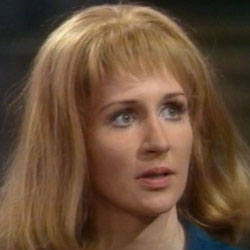

| Home | The Doctors | The Companions | The Villans |
|
|||
|
Liz ShawElizabeth "Liz" Shaw is a fictional character played by Caroline John in the long-running British science fiction television series Doctor Who and its spin-offs. A civilian member of UNIT - United Nations Intelligence Taskforce (later retitled: UNified Intelligence Taskforce), an international organisation that defends the Earth from alien threats, she was the companion of the Third Doctor for the 1970 season. Liz appeared in 4 stories (25 episodes). |